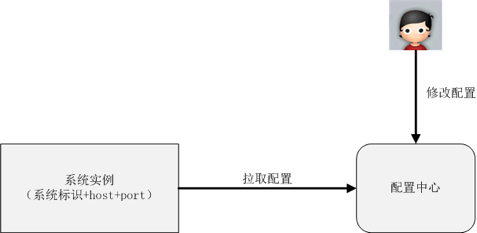
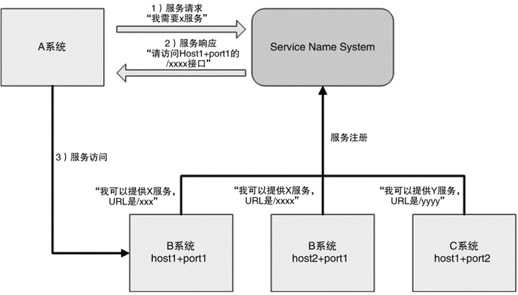
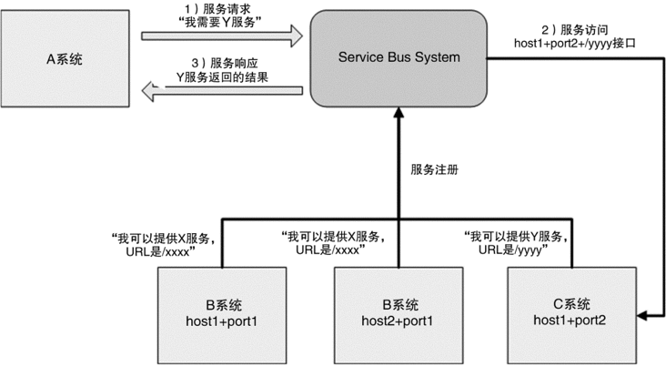
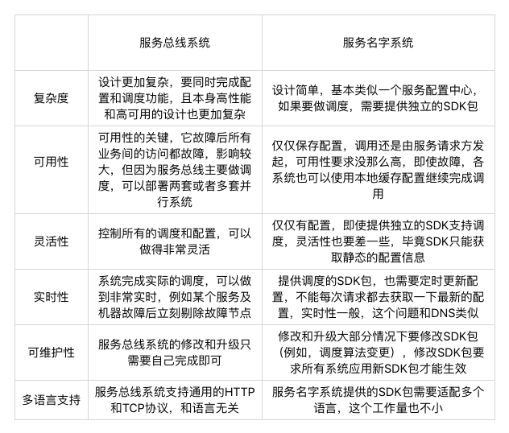

40-互联网架构模板：“开发层”和“服务层”技术
开发层技术
开发框架
指定一个大的技术方向，然后使用统一的框架。
对于框架的选择，有一个总体原则：优先选择成熟的框架，避免盲目追逐新技术。
- 成熟的框架资料文档齐备，各种坑基本上都有人踩过了，遇到问题很容易通过搜索来解决。
- 成熟的框架受众更广，更容易招到合适的人才。
- 成熟的框架更稳定，不会出现大的变动，适合长期发展。
Web 服务器
开发框架只负责完成业务功能的开发，真正运行起来给用户提供服务，还需要服务器的配合。
互联网行业一般都是挑选一个流行的开源服务器即可。大一点的公司，可能会在开源服务器的基础上，结合自己的业务进行二次开发，一般的公司只需要将开源的服务器摸透，优化一下参数，调整一下配置就差不多可以了。
选择服务器跟开发语言有关。例如：JAVA的tomcat，jboss等。当然最保险的是apache，它什么语言都支持。
不需要担心apache的性能问题，等业务发展到apache撑不住的时候再考虑切换也不迟，那时候有钱、有人、有时间。
容器
以Docker为代表的容器在BAT级别的公司已经有很多的应用了。
传统的虚拟化技术是虚拟机，解决了跨平台的问题，但由于虚拟机太庞大、启动太慢，运行时占用太多的资源，在互联网公司并没有大规模的应用。而Docker的容器技术，虽然没有跨平台，但是启动快，几乎不占用资源，推出后立刻就火了起来。预计是技术发展的主流方向。
Docker不仅仅是虚拟化或者容器技术、它将很大的改变目前的技术趋势：
- 运维方式会发生革命性的变化：Docker启动快，几乎不占用资源，随时启动和停止，基于Docker打造自动化运维、智能化运维将会成为主流方式。
- 设计模式会发生本质的改变：启动一个新的容器实例代价如此之低、将鼓励设计思想朝“微服务”的方式发展。
例如：一个传统的网站包括登录、注册、页面访问、搜索等功能，在没有容器的情况下，除非有特别大的访问量，否则这些功能一开始都是集成在一个系统里面的。有了容器技术后，一开始就可以将这些功能按照服务的方式设计，避免后续访问量增大地又要重构系统。
服务层技术
服务层的主要目标就是为了降低系统间互相关联的复杂度。因为随着业务的发展，业务系统会越来越多，例如开发A系统的业务，需要B、C、D等十几个系统进行合并。从数据的角度来看，复杂度呈指数级上升。
配置中心
配置中心就是集中管理各个系统的配置。
当系统数量不多时，一般都是各系统自己管理自己的配置，但系统数量多了以后，这样处理会出现问题：
- 某个功能上线时，需要多个系统配合上线，分散配置时，操作效率低，配置检查、沟通协调需要耗费较多时间。
- 处理线上问题时，需要多个系统配合检查时，分散配置时，操作效率低，配置检查、沟通协调需要耗费较多时间。
- 各系统自己配置时，一般是通过文本编译器的方式修改的，没有自动的校验机制，容易配置错误，而且很难发现。
例如:把IP地址的中的0配置成大写的O,肉眼很难看出，但是通过程序检查就很容易。
实现配置中心就是为了解决上面的这些问题，将配置中心做成通用系统的好处在于：
- 集中配置多个系统，效率高。
- 所有配置都在一个集中的地方，检查方便，协作效率高。
- 配置中心可以实现程序化的规则检查，避免常见的错误。
- 配置中心相当于备份了系统的配置，当某些情况下需要搭建新的环境时，能够快速搭建环境和恢复业务。
通过“系统标识+host+port”来标识唯一一个系统运行实例中常见的设计方法。

服务中心
系统数量不是很多时，系统间的调用一般都是直接通过配置文件记录在各系统内部的，但当系统数量多了以后，这种方式就会有问题。
如有10个系统依赖A系统的X接口，A系统实现了一个新的接口Y，可以更好的实现X接口提供的功能，如果让已有10个系统都切换到Y接口，则这10个系统的几十上百台机器的配置都要修改，然后重启，效率很低。
如果A系统总共有20台机器，现在其中有5台出故障了，其它系统通过域名访问A系统，则域名缓存失效前，还是可能访问到这5台机器的。如果其它系统通过IP访问A系统，那么A系统每次增加或删除机器，其它所有10个系统的几百台机器都需要同步修改，这样的协调工作太大。
服务中心就是为了解决上面提到的跨系统依赖的“配置”和“调度”问题。
服务中心的实现一般有二种方式：服务名称系统和服务总线系统
服务名称系统
服务名称系统与DNS相似，DNS的作用是解析域名，服务名称系统是为了将Service名称解析为“host+port+接口名称”，但是和DNS一样，真正发起请求的还是请求方。

服务总线系统
相比服务名称系统，服务总线系统更进一步，由总线系统完成调用，服务请求方都不需要直接和服务提供方交互了。

二者对比:

消息队列
互联网业务的特点就是“快”，这就要求很多业务处理采用异步的处理方式。
传统的异步通知方式是由消息生产者直接调用消息消费者提供的接口进行通知的，但当业务系统庞大，子系统数量增多时，这时会导致系统间交互非常复杂和难以管理，因为系统互相依赖和调用，整个系统的结构就像是一张蜘蛛网。
消息队列就是为了实现这种跨系统异步通知的中间件系统。消息队列即可以“一对一”通知，也可以是“一对多”广播。
引入消息队列后：
- 整体结构从网状结构变成线性结构，实现简单。
- 增加新的消费者，消息生产者完全不需要任何改动，扩展方便。
- 消息生产者和消费者解耦，实现简单。
- 消息队列系统可以做高可用，高性能，避免各业务子系统各自独立做一套，减轻工作量。
- 业务子系统只需要聚焦业务即可，实现简单。
常见的开源消息系统有：RocketMQ,Kafka,ActiveMQ。